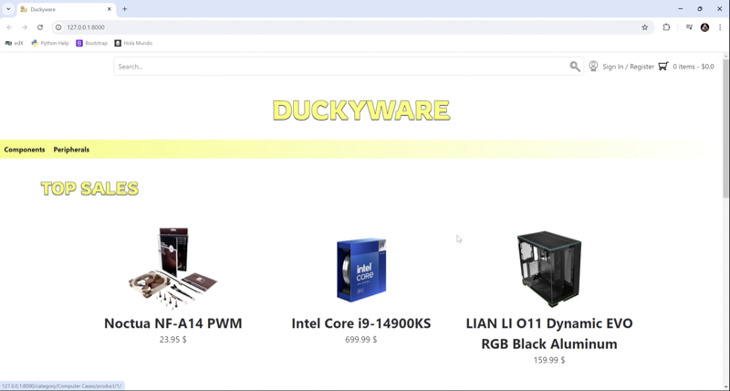
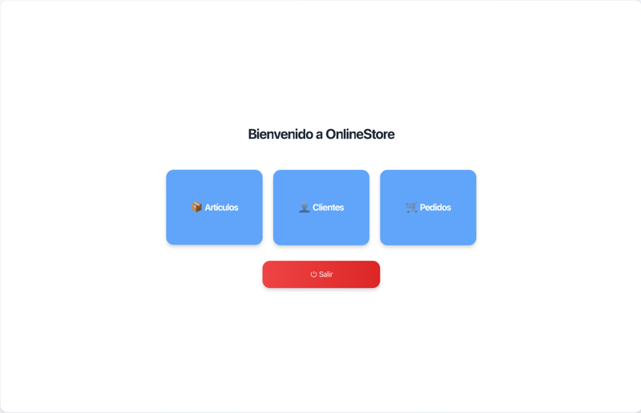
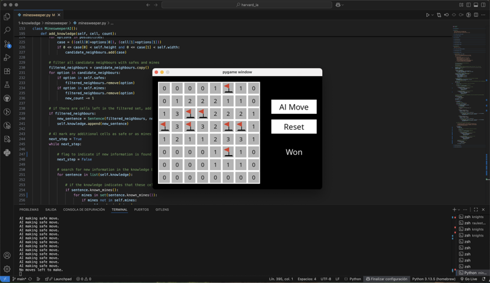

DuckyWare — Web Backend Application
Full-featured e-commerce web application developed with Python and Django.
Selection of academic and personal projects focused on backend development, software engineering and applied artificial intelligence.

Full-featured e-commerce web application developed with Python and Django.

Desktop application developed in Java using JavaFX, designed following a clean MVC architecture.

Final project for CS50's Introduction to Artificial Intelligence with Python by HarvardX.